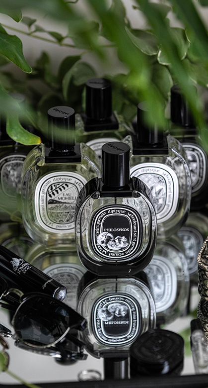

MAISON FRANCIS
KURKDJIAN
PARIS

Satin mood
발향
★★★★★
엑스트레는 물론 edp도 굉장히 강한 발항력을 갖고있습니다.
단점 및 주의점 : 가격도 발향만큼 강함
4뿌 이상 할시 뒷통수를 조심해야 함
엑스트레는 물론 edp도 굉장히 강한 발항력을 갖고있습니다.
단점 및 주의점 : 가격도 발향만큼 강함
4뿌 이상 할시 뒷통수를 조심해야 함
지속
★★★★★★
엑스트레는 물론 edp도 말도 안되는 지속력을 갖고있습니다.
단점 및 주의점 : 가격도 지속력만큼 말이 안됨
옷에 뿌리면 3일은 가서 다른 향수를 못 쓰기 때문에 스타일러가 꼭 있어야 함
엑스트레는 물론 edp도 말도 안되는 지속력을 갖고있습니다.
단점 및 주의점 : 가격도 지속력만큼 말이 안됨
옷에 뿌리면 3일은 가서 다른 향수를 못 쓰기 때문에 스타일러가 꼭 있어야 함
특징
요구르트 졸인 냄새, 치과 냄새, 중동 냄새 등 온갖 피드백을 받을 수 있음
발향이 너무 강해서 뿌린 본인의 후각을 마비시킬 때가 종종 있음
요구르트 졸인 냄새, 치과 냄새, 중동 냄새 등 온갖 피드백을 받을 수 있음
발향이 너무 강해서 뿌린 본인의 후각을 마비시킬 때가 종종 있음
여기엔 사틴무드에 대한 설명과 이것저것이 들어갑니다



노트 및 특징
단일노트 : 장미, 카시스, 블랙 커런트, 베르가못, 만다린 오렌지, 앰버그리스, 머스크, 블랙 커런트 잎
L'Ombre Dans L'Eau는 비오는 날 뿌리기 좋은 향수로 유명한데,
아마 장미(줄기)의 초록 풀떼기 향이 강하기 때문인 것 같습니다.
야생의 풀내음이 어두운 숲속의 비에 젖은 장미(줄기)를 연상케 하는데, 개인적으로도 젖은 축축한 풀의 향기가 강하다고 느낍니다.
Tom Ford의 noir de noir와 서늘하고 어두운 느낌이란 점에서 비슷하지만 결이 조금 다릅니다.
장미향이 어디있어?
처음 뿌렸을 때, 메인 노트는 장미인데 실제로 장미향 보다는 장미 줄기를 믹서기로 갈아버린 향이 강해서 놀라게 됩니다.떄문에 "어디서 제초기 돌리고 왔냐?"는 피드백을 종종 받을 수 있습니다.
메인노트가 장미이기 때문에 많은 분들이 여성 향수로 생각하시고, 실제로 여성 향수로 나왔지만, 파우더리함이 거의 제로에 가깝기 때문에 젠더리스 향수로 분류되고 있습니다.
드라이 다운 되기 시작하면 그때서야 장미(생화)향이 슬슬 올라오는데, 이 때는 이미 발향이 상당히 약해진 상태라서 '장미 향을 풍기고 다니고 싶다!'' 라는 사람에겐 추천할 수 없습니다.
뻔하지 않은 장미
많은 분들이 장미 향수라고 하면 MAISON FRANCIS KURKDJIAN의 A La Rose와 같은 파우더리하고 붉은색 장미 잎이 가득 들어간 향을 가장 먼저 떠올릴 것 같은데요, L'Ombre Dans L'Eau는 뻔하지 않은 장미 향수라는 부분에서 나름대로 대체 불가능한 위치에 있지 않나 싶습니다.에르메스
h24 사진 및 소개